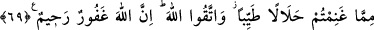
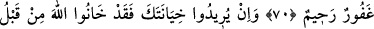
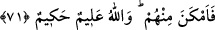
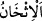

SAVAŞ ESİRLERİ
67. Yeryüzünde ağır bas(ıp küfrün belini iyice kır)ıncaya kadar hiçbir
peygambere esirler sahibi olmak yakışmaz. Siz, geçici dünya malını istiyorsunuz,
Allah ise (sizin için) ahireti istiyor. Allah daima üstün, hüküm ve hikmet sahibidir.
68. Eğer önceden Allah tarafından verilmiş bir hüküm olmasaydı, aldıklarınızdan
dolayı size mutlaka büyük bir azab dokunurdu.
69. Artık aldığınız ganimetten helâl ve temiz olarak yeyin ve Allah’tan korkun.
Şüphesiz Allah, bağışlayan, esirgeyendir.”
70. Ey Peygamber, elinizde bulunan esirlere de ki: “Eğer Allah sizin gönlünüzde
bir hayır olduğunu bilirse, sizden alınandan daha iyisini size verir ve sizi bağışlar.
Allah bağışlayandır, esirgeyendir.”
71. Eğer sana hâinlik etmek isterlerse, daha önce Allah’a da hâinlik etmişlerdi.
Bu yüzden (Allah) onlara karşı (sana) imkan verdi. Allah her şeyi bilendir, yerli
yerince yapandır.
“Yeryüzünde ağır bas(ıp küfrün belini iyice kır)ıncaya kadar” yani duruma hâkim
olup küfrü ve ehlini zelil kılmadan, İslâm üstün ve ehli galib hâle gelmeden
peygamberlerden “hiçbir peygambere esirler sahibi olmak yakışmaz.” uygun ve doğru
olmaz.
Âyette geçen “hattâ” kelimesi nihai hedefi gösterir. Dolayısıyla yeryüzünde ağır basıp
hâkim olmayı, esir almaya tercih etmesi gerektiğine delalet etmektedir.
“” kelimesi, cisimlerdeki kalınlık ve kesafet için kullanılan “
kelimesinden türetilmiştir. Daha sonra istiare olarak fazlaca öldürme ve bu konuda ileri
gitme hakkında kullanılmıştır. Şavaşta düşman çok öldürüldüğünde sanki yerinden